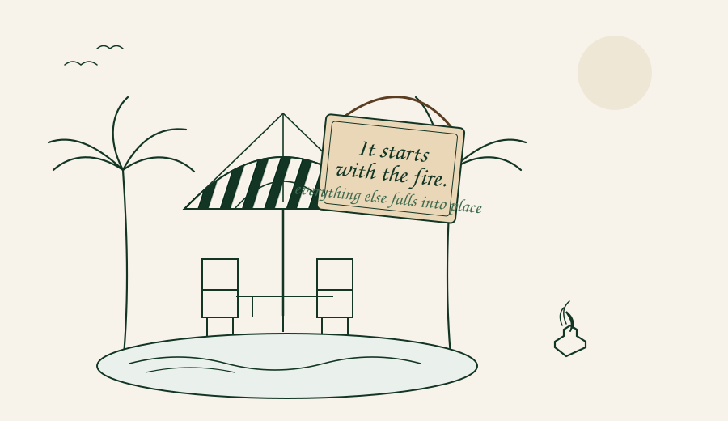

Outdoor Food Culture
A table gathered around food, fire and people — under open skies.
Outdoor Food Culture
A table gathered around food, fire and people — under open skies.
Fire allowed humans to cook food, sit longer together, and create social bonds that did not exist before. Around the fire, humans talked, planned, passed on culture.
Kavara KavaraKAVARA KAVARA began in the heart of Ghana, where the rhythms of the day were set by heat and light — the kettle on the coals, the table under the mango tree, the long afternoons when nobody needed to be anywhere.
That memory travelled with us, and we rebuilt it around our own fire. The name echoes the sound of rain on a tin roof — patient, warm, impossible to hurry.
— the first fire was lit in a borrowed garden
wood is chopped, not sourced · no one leaves hungry · everyone stays long

Three friends, one borrowed fire, and a culture that grew slowly and warmly.